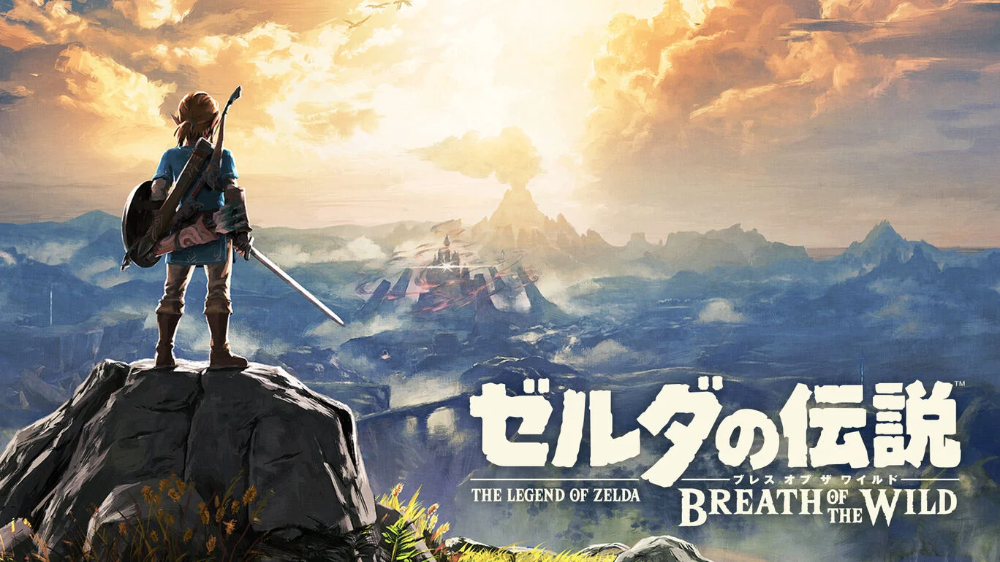
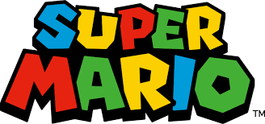
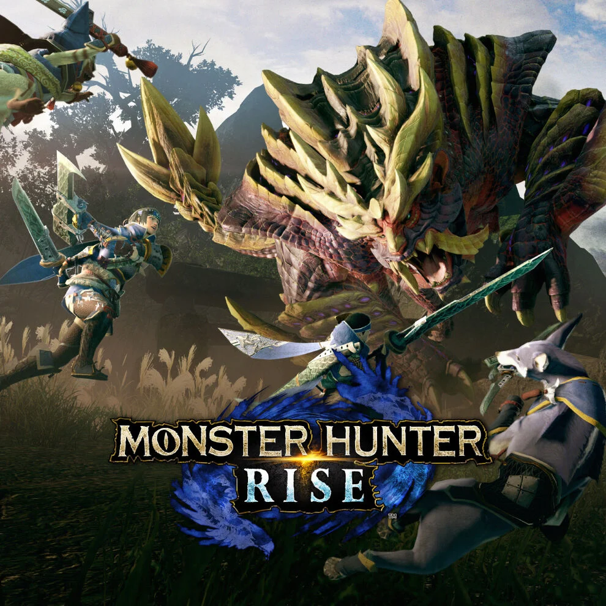
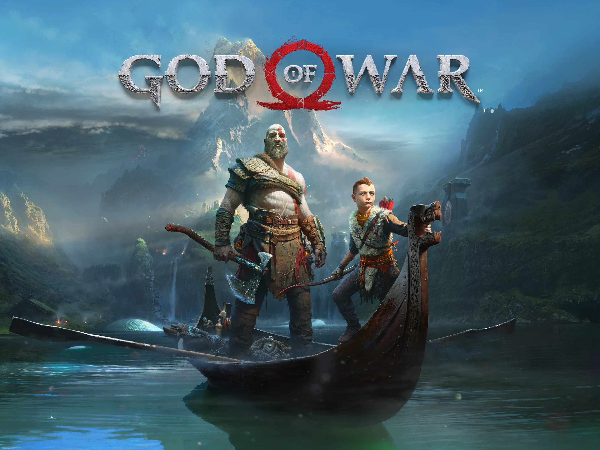

ゼルダの伝説
ゼルダ公式
2017年3月3日発売の『ゼルダの伝説 ブレス オブ ザ ワイルド』の公式ガイドブック。 アクション、アイテム、装備、リンクの強化、そして戦闘指南など、「システム」編 では、本作の特徴である、自由度の高い冒険を楽しむための基礎知識を、項目ごとに詳 しく解説。 「エリアガイド」編では、全15エリアごとに、シーカータワー、自然環境、施設などの詳 細情報を収録しています。
ELDEN RING

ELDEN RING公式
『ELDEN RING』（エルデンリング）は、フロム・ソフトウェアが開発し、
2022年2月25日に発売されたオープンワールドのアクションRPG [5] [6]
[7]。 海外での販売はバンダイナムコエンターテインメントが担当する。
キャッチコピーは「王となれ」。
マリオ
マリオ公式
マリオシリーズ（Mario Series）は、任天堂から発売されている、 同社のキャラクター『マリオ』と、その仲間達が登場する数々の種 類のコンピュータゲームシリーズ及びメディアミックス[注 1]であ る。そのうち『スーパーマリオブラザーズ』を源流とするアクショ ンゲームシリーズは、公式的に『スーパーマリオシリーズ』と呼ば れている[1]。2020年時点で全シリーズの累計の売り上げは全世界 で5億6000万本以上を突破しており、最も売れたゲームシリーズと してギネス世界記録に認定されている
モンハン
モンハン公式
『モンスターハンターライズ』は、カプコンより2021年3月26日に発売された モンスターハンターシリーズのゲームソフト。公式の通称は『モンハンライズ 』、『MHRise』。Nintendo Switch向けに上記の記述日に世界同時に発売され 、2022年1月13日にはMicrosoft Windows向けにも発売された。
ポケモン

ポケモン公式
『ポケットモンスター スカーレット・バイオレット』は、株式会社ポケ モンより2022年11月18日に発売されたNintendo Switch用ロールプレイ ングゲーム『ポケットモンスター スカーレット』と『ポケットモンスタ ー バイオレット』の総称。ポケットモンスターシリーズ完全新作の9作目 。略称は「ポケモンSV」。
ゴッドオブウォー
ゴッドオブウォー公式
ゴッド・オブ・ウォー』 (God of War) とはソニー・コンピュータエンタテ インメントのSCEサンタモニカスタジオが開発したPlayStation 2用3Dアクシ ョンアドベンチャーゲームである。アメリカでは2005年3月22日に発売され、 ストーリー・グラフィック・サウンドなどの高い完成度や、ギリシア神話を題 材にした暴力描写が話題となり、一躍SCEを代表する人気タイトルとなった。